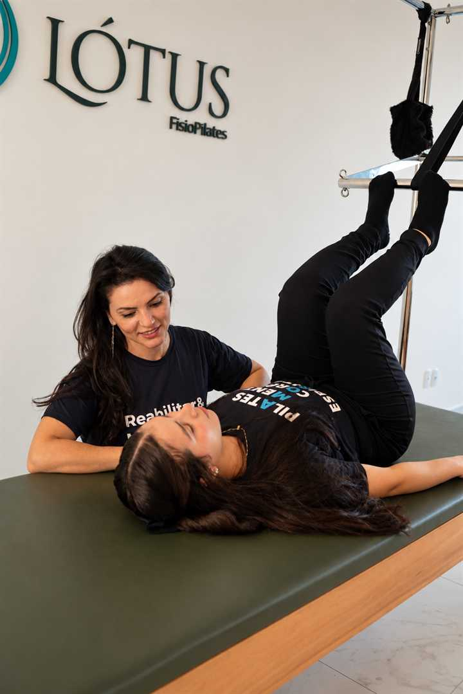
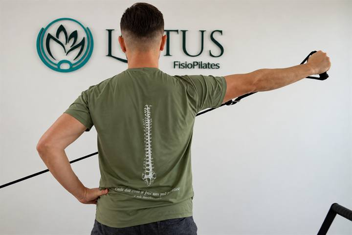

Controle e apoio
Pilates
Prática para mobilidade, estabilidade e força da coluna, ajustada ao momento de cada pessoa. No Anita Garibaldi e no Vila Nova.
Dor nas costas · Joinville
Ficar com dor nas costas não é normal. Na Lótus FisioPilates, profissionais capacitados e atenciosos ajudam no processo de quem convive com dor nas costas e dor na coluna. O pilates é no Anita Garibaldi, Rua Anita Garibaldi, 293, e no Vila Nova, Rua São Firmino, 88. A fisioterapia e as terapias manuais são atendidas no estúdio do Anita Garibaldi. De segunda a sexta, das 06:00 às 21:00.

O processo
Um homem é tão jovem quanto a sua coluna.
A dor na coluna vai ocupando o expediente, o fim de semana e o tempo com a família. A Lótus FisioPilates entra para ajudar nesse processo, com profissionais capacitados e atenciosos, e com uma avaliação antes de escolher o caminho.
O pilates acontece no Anita Garibaldi, na Rua Anita Garibaldi, 293, e no Vila Nova, na Rua São Firmino, 88. A fisioterapia e as terapias manuais são atendidas no estúdio do Anita Garibaldi. O horário, de segunda a sexta, das 06:00 às 21:00, cabe antes do trabalho, no meio do dia ou no fim da tarde.
A cidade e os bairros estão na página de pilates em Joinville. A abordagem da unidade está na página inicial.
Como a coluna é cuidada
Os dois métodos podem auxiliar. Na aula avaliativa, a Lótus ajuda a identificar o caminho. A reabilitação com o método pilates é no Anita Garibaldi e no Vila Nova. A fisioterapia e as terapias manuais ficam no estúdio do Anita Garibaldi.
Prática para mobilidade, estabilidade e força da coluna, ajustada ao momento de cada pessoa. No Anita Garibaldi e no Vila Nova.
Quando a dor limita o dia, a fisioterapia entra depois da avaliação, no estúdio do Anita Garibaldi, para recuperar função com segurança.
Recurso para tensão e dor, indicado depois da avaliação, no estúdio do Anita Garibaldi.
O que a dor tira
A coluna dói e o dia encolhe. O trabalho pesa, o passeio fica para depois e o colo da criança cobra um corpo que aguente. A Lótus acompanha a trajetória para devolver esses momentos, sem prometer que a dor some para toda pessoa.
Sentar, ficar em pé ou carregar peso o dia inteiro e ainda ter corpo quando o expediente acaba.
Voltar a caminhar, sair no fim de semana e ocupar o tempo livre sem negociar com a dor.
O colo, a brincadeira e a presença em casa. Os momentos que a dor foi empurrando para depois.

Trajetória
O caminho começa pela escuta. Profissionais capacitados e atenciosos da Lótus FisioPilates ajudam no processo, do primeiro contato à rotina com mais qualidade de vida. Na aula avaliativa, a Lótus ajuda a identificar se o caminho é pilates ou fisioterapia. Os dois métodos podem auxiliar. A reabilitação com o método pilates é no Anita Garibaldi e no Vila Nova. A fisioterapia e as terapias manuais são no estúdio do Anita Garibaldi.
Aguentar o expediente sentado, em pé ou carregando peso.
Devolver o colo, o passeio e o fim de semana.
Profissionais capacitados e atenciosos acompanham o processo.
Dúvidas frequentes
Pode ajudar, depois da aula avaliativa. Na Lótus FisioPilates, profissionais capacitados e atenciosos acompanham o processo. O pilates é no Anita Garibaldi, Rua Anita Garibaldi, 293, e no Vila Nova, Rua São Firmino, 88. A reabilitação com o método pilates é atendida nas duas sedes. A fisioterapia e as terapias manuais são atendidas no estúdio do Anita Garibaldi.
Não. Ficar com dor não é normal. A dor tira trabalho, lazer e tempo com a família. A Lótus FisioPilates ajuda no processo, com avaliação antes de definir se o caminho começa pelo pilates ou pela fisioterapia.
A Lótus FisioPilates, com profissionais capacitados e atenciosos. O acompanhamento vai do primeiro contato à rotina com menos dor. O pilates é no Anita Garibaldi e no Vila Nova. A fisioterapia e as terapias manuais são no estúdio do Anita Garibaldi, de segunda a sexta, das 06:00 às 21:00.
Os dois métodos podem auxiliar. Na aula avaliativa, a Lótus FisioPilates ajuda a pessoa a identificar o caminho mais adequado. A reabilitação com o método pilates é atendida no Anita Garibaldi, Rua Anita Garibaldi, 293, e no Vila Nova, Rua São Firmino, 88. A fisioterapia e as terapias manuais são atendidas no estúdio do Anita Garibaldi.
No Anita Garibaldi, Rua Anita Garibaldi, 293, com pilates, fisioterapia e terapias manuais. No Vila Nova, Rua São Firmino, 88, com pilates. O funcionamento é de segunda a sexta, das 06:00 às 21:00.
Serve para quem passa o dia sentado, em pé ou carregando peso e chega no fim do expediente com a coluna pedindo pausa. A prática é ajustada depois da avaliação, no Anita Garibaldi ou no Vila Nova.
Pelo WhatsApp +55 47 99289-7343, de segunda a sexta, das 06:00 às 21:00. Informe que o assunto é dor na coluna. Fisioterapia e terapias manuais são atendidas no estúdio do Anita Garibaldi.
Sim. A Lótus FisioPilates atende dor lombar com pilates no Anita Garibaldi, Rua Anita Garibaldi, 293, e no Vila Nova, Rua São Firmino, 88. A avaliação define se o caminho começa pelo pilates ou pela fisioterapia. Fisioterapia e terapias manuais são no estúdio do Anita Garibaldi, de segunda a sexta, das 06:00 às 21:00.
Entram na avaliação. Dor lombar, dor nas costas e dor na cervical são motivos comuns de quem procura a Lótus FisioPilates em Joinville. O profissional escuta o caso antes de indicar pilates, nas duas sedes, ou fisioterapia e terapias manuais, no Anita Garibaldi.
O caso passa pela aula avaliativa, sem começar por conta própria. Na Lótus FisioPilates, profissionais capacitados e atenciosos ajudam a identificar se o caminho é pilates ou fisioterapia. Os dois métodos podem auxiliar. A reabilitação com o método pilates é atendida no Anita Garibaldi e no Vila Nova. Não há promessa de que a dor desapareça para toda pessoa.
O reformer é um dos aparelhos do pilates na Lótus FisioPilates, no Anita Garibaldi e no Vila Nova. O exercício é escolhido depois da avaliação, para mobilidade, estabilidade e força, no ritmo de cada pessoa.
Os dois métodos podem auxiliar. Na aula avaliativa, a Lótus FisioPilates ajuda a identificar o caminho. A reabilitação com o método pilates acontece no Anita Garibaldi e no Vila Nova. A fisioterapia e as terapias manuais são atendidas no estúdio do Anita Garibaldi.
Dá. A Lótus FisioPilates funciona de segunda a sexta, das 06:00 às 21:00, no Anita Garibaldi, Rua Anita Garibaldi, 293, e no Vila Nova, Rua São Firmino, 88. O horário cabe antes do expediente, no meio do dia ou no fim da tarde. O agendamento é pelo WhatsApp +55 47 99289-7343.
Como chegar
Pilates para a coluna no Anita Garibaldi e no Vila Nova. Fisioterapia e terapias manuais no estúdio do Anita Garibaldi. Segunda a sexta, das 06:00 às 21:00.
Pilates, fisioterapia e terapias manuais
Pilates
Pilates, fisioterapia e terapias manuais · 06:00 às 21:00
Abrir no Google Maps